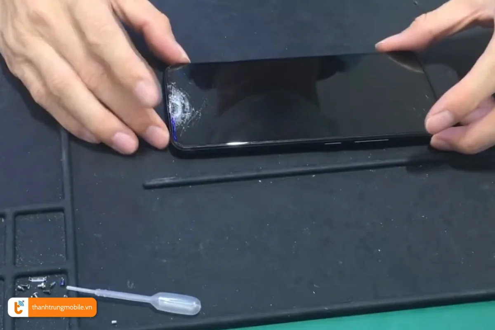
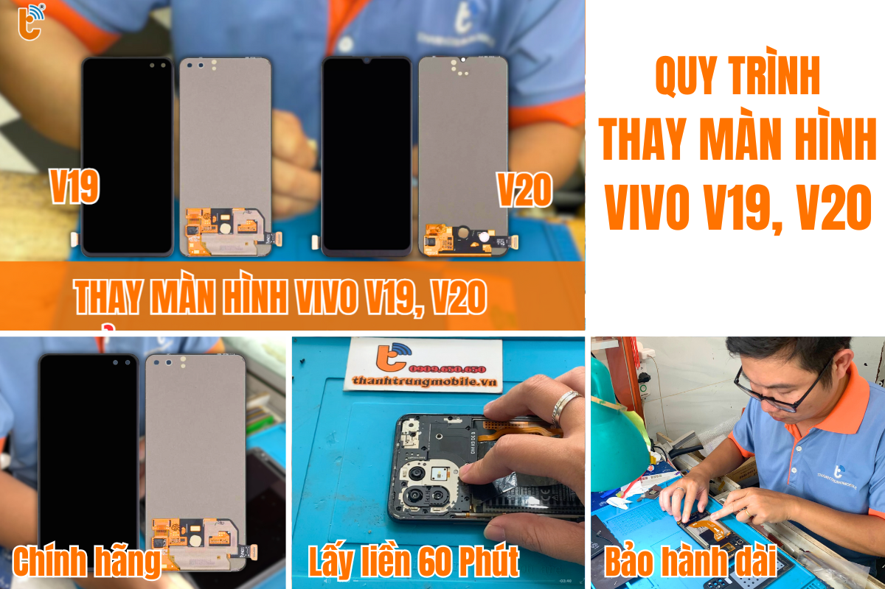
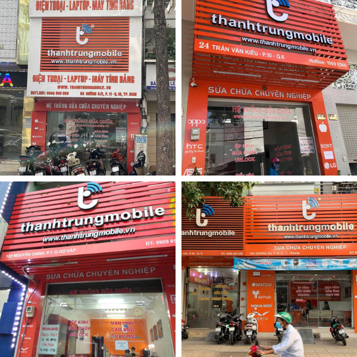

Thay Màn Hình Vivo V19, V20 Chính Hãng, Giá Rẻ tại Thành Trung Mobile
Màn hình điện thoại Vivo không chỉ ảnh hưởng đến việc hiển thị mà còn quyết định trực tiếp đến trải nghiệm người dùng. Nếu màn hình Vivo của bạn bị nứt, vỡ hay có vấn đề về cảm ứng, hãy đến ngay Thành Trung Mobile - địa chỉ thay màn hình Vivo chính hãng tại TP.HCM với dịch vụ lấy ngay, giá rẻ và bảo hành dài hạn.
Khi nào cần thay màn hình Vivo?
Màn hình Vivo V19, V20 có thể gặp phải nhiều vấn đề làm gián đoạn trải nghiệm sử dụng. Dưới đây là một số dấu hiệu cho thấy bạn cần thay màn hình:
- Màn hình bị vỡ, nứt: Nếu màn hình Vivo của bạn bị vỡ hay nứt nghiêm trọng, cần thay màn hình ngay để tránh tình trạng hư hỏng nặng hơn.
- Cảm ứng liệt hoặc không nhạy: Cảm ứng không phản hồi hoặc chỉ hoạt động ở một số khu vực, đây là dấu hiệu rõ ràng của việc cần thay màn hình.
- Màn hình bị sọc, đốm sáng: Nếu màn hình xuất hiện sọc ngang, dọc hoặc đốm sáng đen, màu sai lệch, bạn cần thay màn hình để phục hồi chất lượng hiển thị.
- Màn hình không hiển thị: Nếu bạn gặp tình trạng màn hình không hiển thị dù điện thoại vẫn bật, thay màn hình chính hãng là giải pháp tốt nhất.
Thay màn hình không chỉ giúp tiết kiệm chi phí mà còn giúp bạn sử dụng điện thoại lâu dài mà không gặp các sự cố về màn hình.
Giá Thay Màn Hình Vivo V19 và V20 Tại Thành Trung Mobile
Thành Trung Mobile cung cấp dịch vụ thay màn hình Vivo chính hãng với mức giá hợp lý và minh bạch. Dưới đây là bảng giá tham khảo cho các dòng Vivo phổ biến:
| Dòng Máy | Giá Thay Màn Hình | Thời Gian Thay | Bảo Hành |
|---|---|---|---|
| Vivo V19 | 3.700.000 VNĐ | 30 - 60 phút | 6 tháng |
| Vivo V20 | 1.800.000 VNĐ | 30 - 60 phút | 6 tháng |
Giá có thể thay đổi tùy thuộc vào tình trạng và loại màn hình khách hàng chọn. Chúng tôi cam kết giá thay màn hình Vivo hợp lý, không phát sinh chi phí ẩn.
Để có báo giá chính xác, khách hàng có thể liên hệ trực tiếp qua hotline hoặc đến cửa hàng Thành Trung Mobile.
Các Loại Màn Hình Vivo V Và Phân Khúc Giá
Màn hình Vivo có thể được chia thành nhiều loại, tùy thuộc vào công nghệ và phân khúc. Dưới đây là một số loại màn hình phổ biến trên các dòng Vivo:
- AMOLED: Màn hình AMOLED cho độ sáng và độ tương phản cao, phổ biến trên các dòng cao cấp như Vivo V19, V20.
- LCD: Màn hình LCD có độ sáng và độ sắc nét vừa phải, thường thấy trên các dòng Vivo tầm trung như Vivo Y19, Y20.
- Màn hình Giọt Nước (Waterdrop): Thiết kế màn hình với notch nhỏ gọn, đặc biệt trên các dòng Vivo tầm trung.
Chọn màn hình phù hợp với nhu cầu sử dụng và ngân sách sẽ giúp bạn tiết kiệm chi phí mà vẫn có trải nghiệm tốt. Màn hình AMOLED thường đắt hơn so với LCD nhưng có chất lượng hiển thị vượt trội.
Thay Màn Hình Vivo V19, V20 Có Ảnh Hưởng Đến Máy Không?
Thay màn hình Vivo tại Thành Trung Mobile sử dụng linh kiện chính hãng và thực hiện bởi kỹ thuật viên tay nghề cao, đảm bảo không ảnh hưởng đến các linh kiện khác của điện thoại. Màn hình thay mới hoạt động bình thường, cảm ứng mượt mà, hiển thị sắc nét.
Việc thay màn hình đúng kỹ thuật và sử dụng linh kiện chính hãng sẽ giúp máy hoạt động ổn định và không gặp lỗi phần mềm hay phần cứng.
Thời Gian Thay Màn Hình Vivo V19 và V20 Tại Thành Trung Mobile
Với quy trình thay màn hình chuyên nghiệp, thời gian thay màn hình Vivo tại Thành Trung Mobile chỉ mất từ 30 phút đến 2 giờ. Khách hàng có thể ngồi chờ và nhận máy ngay trong ngày.
Chúng tôi cam kết quy trình minh bạch, khách hàng có thể quan sát trực tiếp hoặc theo dõi qua camera trong suốt quá trình thay màn hình.
Tại Sao Nên Chọn Thành Trung Mobile Để Thay Màn Hình Vivo?
Thành Trung Mobile là địa chỉ uy tín trong việc thay màn hình Vivo với các ưu điểm nổi bật:
- Linh kiện chính hãng 100%: Đảm bảo chất lượng màn hình sau khi thay sẽ giống như màn hình zin của máy.
- Quy trình thay màn hình chuyên nghiệp: Kỹ thuật viên giàu kinh nghiệm, thao tác nhanh chóng và chính xác.
- Giá cả hợp lý và bảo hành lâu dài: Giá thay màn hình Vivo cạnh tranh, bảo hành từ 6 đến 12 tháng.
Với những lý do trên, Thành Trung Mobile là lựa chọn tuyệt vời cho bạn khi cần thay màn hình Vivo.
Liên Hệ Thành Trung Mobile Ngay Hôm Nay
Để thay màn hình Vivo chính hãng, lấy ngay và giá rẻ, hãy liên hệ với Thành Trung Mobile qua hotline hoặc ghé thăm các chi nhánh gần nhất. Đừng quên đặt lịch trước để nhận ưu đãi giảm giá 10%.